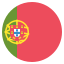
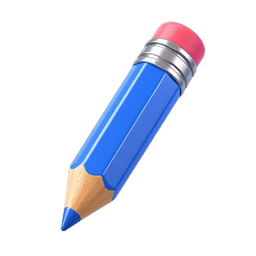
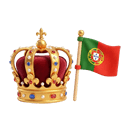
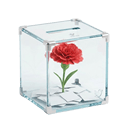

✕
Fechar
Início
Pré-Escolar
1º Ano
2º Ano
3º Ano
4º Ano
Voltar
Portugal: O Século XX

Da Monarquia à Democracia

SÉCULO XX:
A CAMINHO DA LIBERDADE
O Século XX Português

O FIM DA MONARQUIA
e a Primeira República
A DITADURA
e o Estado Novo

O 25 DE ABRIL
e a Democracia
O GRANDE QUIZ
mostra o que aprendeste
1
/
10
0
Missão Concluída!
Erros Históricos:
0
REPETIR JOGO
OUTROS TEMAS
✕
✕